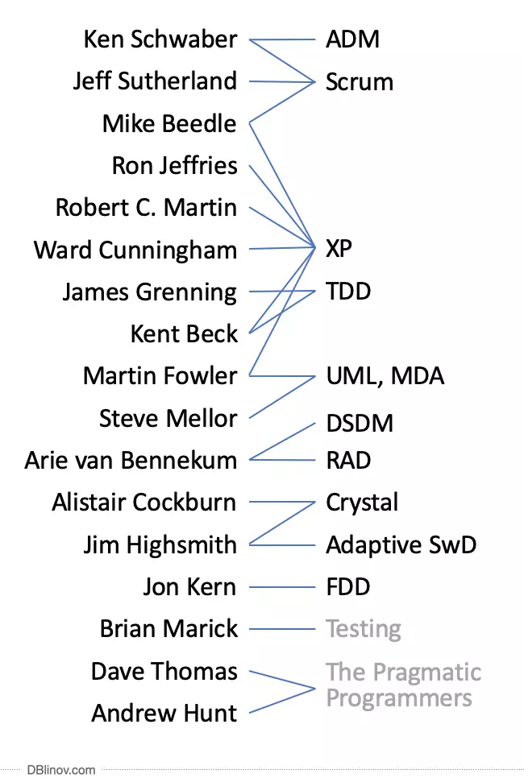

Знакомство
- Принимаю участие в большинстве проектов компании
- Наша команда выполняет разработку под ключ, от незафиксированного ТЗ до фактического результата
- При необходимости подключаемся в проект с существующими процессами и командой
Waterfall
- Применимо для небольших проектов (до 4-х месяцев)
- Может формально ожидаться в гос. проектах, но недостижим на практике
- Часто используется в совокупности с итеративным подходом к разработке

- Agile еще нет, но уже есть Scrum и XP
- Большое влияние оказало XP
- Некоторые участники относятся сразу к нескольким методологиям. Значит эти методологии не противоречат, а дополняют друг друга
- Нет представителей канбан
Проблемы Agile на практике
- Сам по себе Agile ничего не значит
- Знакомство с методологиями, как правило, происходит при внедрении в проект
- Часто встречаются отклонения от методологии
XP
- Не встречал в чистом виде
- В чистом виде требует высокого уровня компетенций разработчиков
- Рекомендую для вовлечения разработчиков
Scrum
- Регулярные активности
- Самоорганизующаяся команда
- Спринты, истории, story points
Регулярные активности
- Дейлики
- Демо
- Ретро
- Grooming/Refinement
- Планирование
Самоорганизующаяся команда
- Покер планинг
- Демо проводят исполнители
- Команда сама фиксирует объем работ
Спринты, истории, story points
- Спринт: 1-2 недели
- Спринт должен завершать хотя бы одну историю
- Story point - абстрактная величина для оценки задачи
- Корректировка объемов спринта
Ошибки при внедрении Scrum
- Привязка sp к часам
- Отсутствие или фиктивный характер ретро
- Отсутствие вовлеченности команды (в планирование, демо...)
Скрамбан/Kanban (в узком смысле)
- Доска задач
- Бесконечный бэклог
- WIP limits
- Готовность к релизу в любой момент
Ошибки при внедрении Скрамбан
- Отказ от атрибутов Scrum
- Игнорирование/бездумное использование WIP
Канбан Метод
Фундаментальные принципы:
- Начать с того что есть сейчас
- Эволюционное развитие
- Проявите уважение у существующим процессам/ролям
- Поощряйте проявление лидерства
Инструменты
- Трекер задач: jira, trelo, youtrack, Яндекс.Трекер...
- Google Sheet
- Miro
- Notion